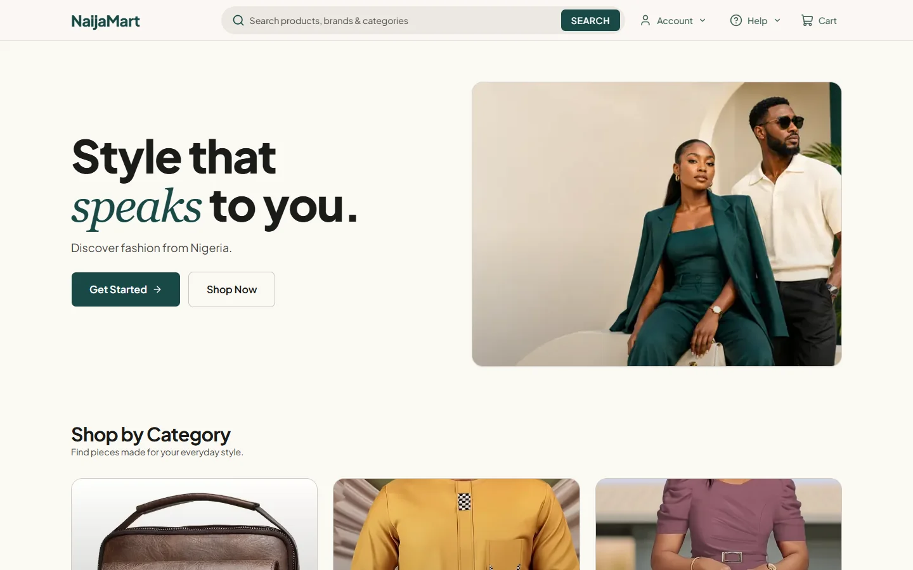
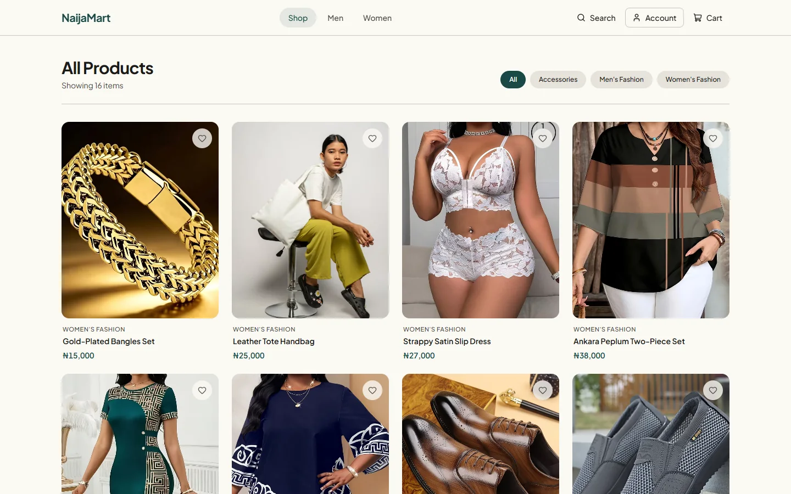
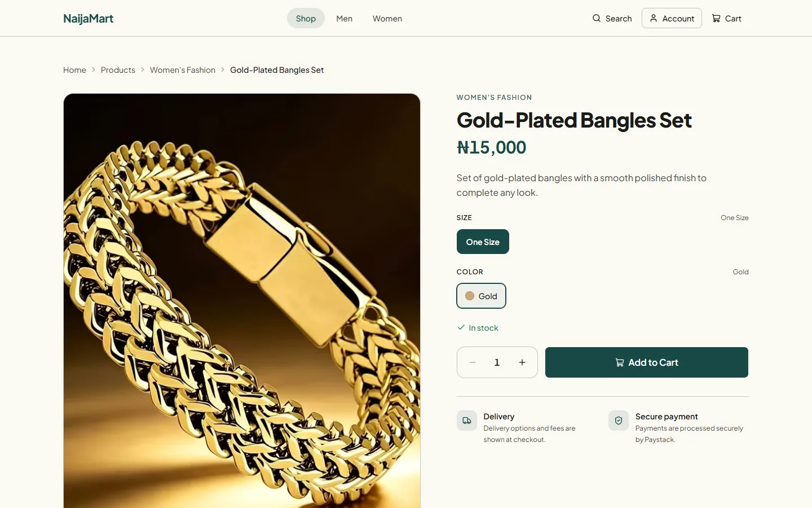
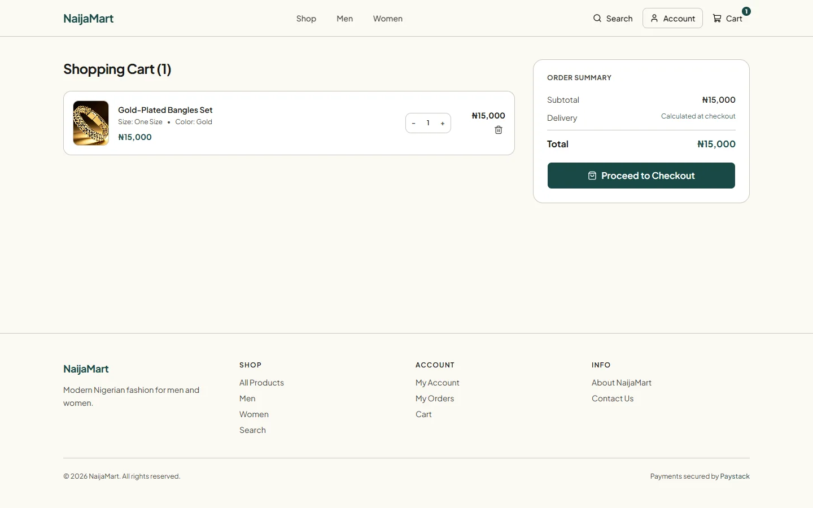
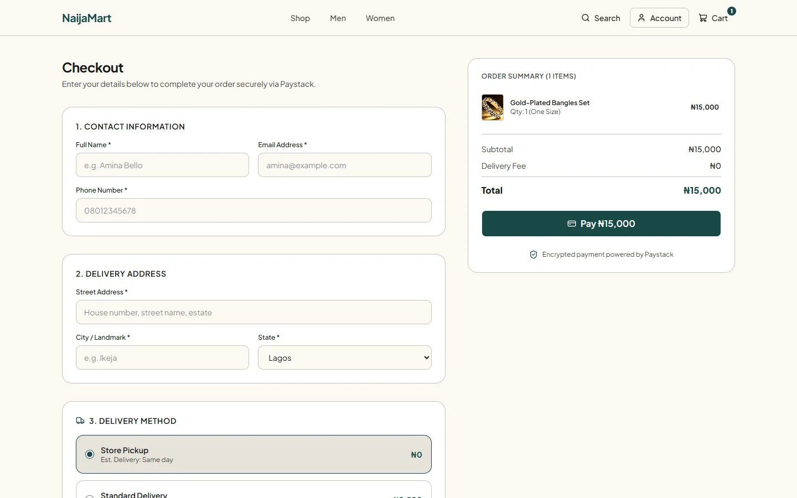
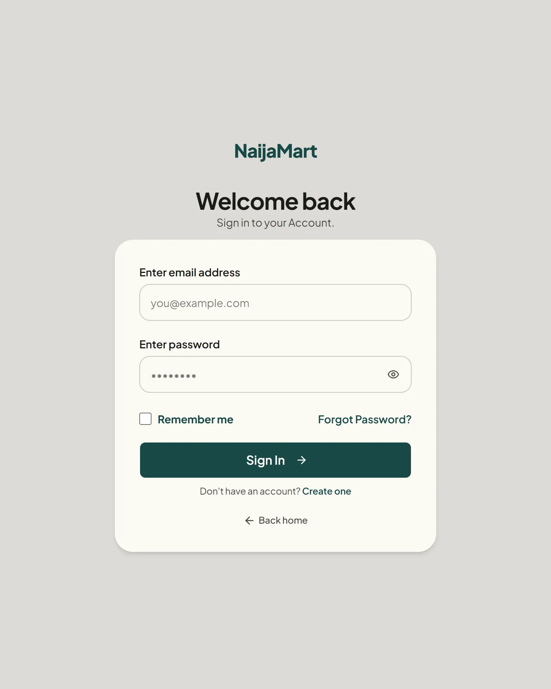
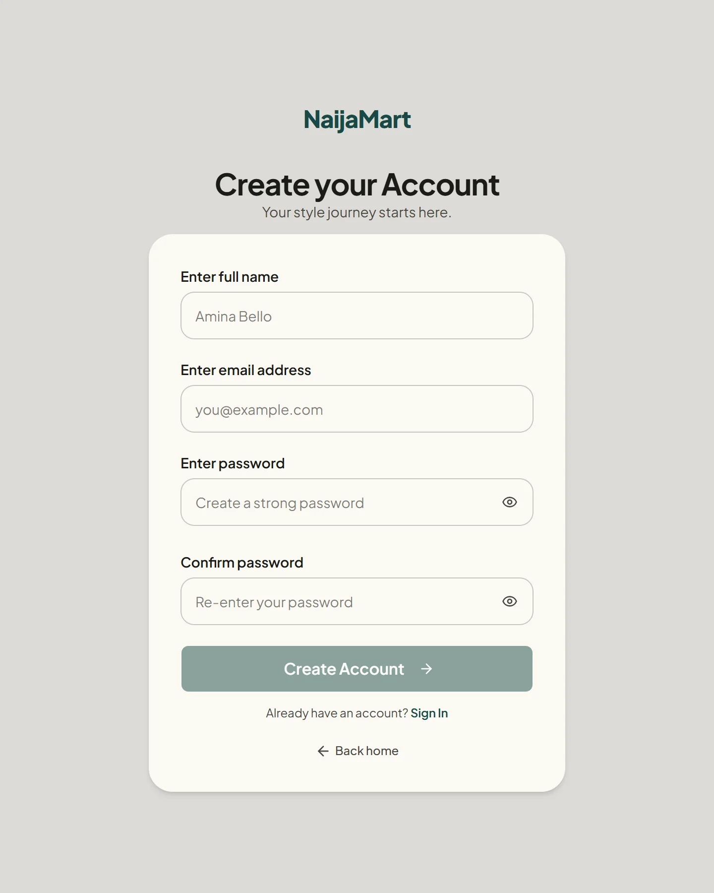
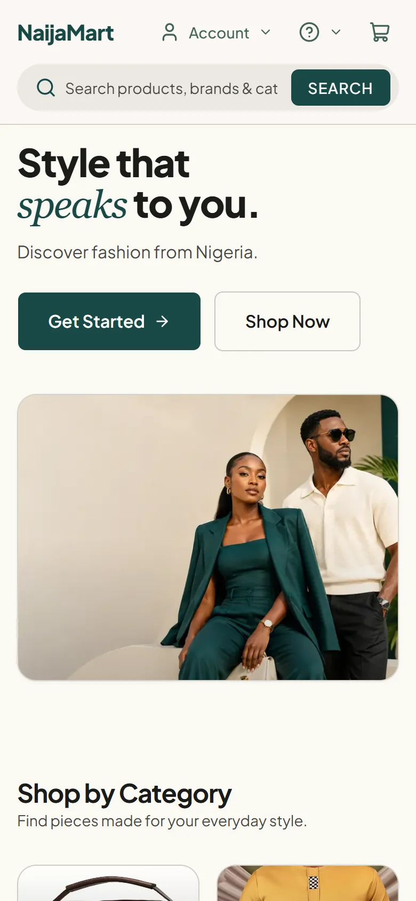

Simple Navigation
A clean header makes shopping, search, account, and cart easy to access.
Project overview Fashion e-commerce
Affordable fashion, made easy to buy.
A fashion storefront for Nigerian men and women — designed, built and deployed from the first screen to a Paystack checkout.

The problem & opportunity
Finding and buying affordable fashion online in Nigeria can mean jumping between social media pages, direct messages, and screenshots. Product details, prices, sizes, and availability are often scattered, making it difficult to compare options and complete a purchase with confidence.
NaijaMart aims to bring the shopping experience into one focused storefront. A place where shoppers can easily discover products, explore clear product details, and move through a straightforward checkout without unnecessary friction.
The goal was simple: make it easy for shoppers to go from discovering a product to completing an order with confidence.
My role & design process
I led product thinking, UI design, and frontend development from concept to deployment.
Designed for Nigerian men and women shopping for affordable fashion, including first-time online shoppers who need clarity and reassurance more than novelty.
I started with the shopping problem and defined the MVP around one complete path from browsing to payment, keeping everything that did not serve that path out of scope.
I mapped the catalogue, product, cart and checkout, and gave menswear and womenswear their own clear routes through the store.
I turned the visual direction into reusable type, spacing, colour and components, so each new screen inherited the same rules.
I built the frontend, connected the data, authentication and payment layers, reviewed each screen in the browser, refined it, and deployed the finished build to Vercel.
Key design decisions
The interface is deliberately quiet. These choices carry the experience instead.
A clean header makes shopping, search, account, and cart easy to access.
Separate men's and women's fashion for easier product discovery.
Show product names, categories, prices, and clear actions.
Prioritise product images, sizes, colours, availability, and pricing.
Use shared typography, colours, spacing, and components throughout.
Ensure a smooth and consistent shopping experience across devices.
The final experience
Every screen below is from the deployed NaijaMart build — no mockups. The path is linear: arrive, browse, inspect, add, review, pay. Select any screen to open a larger view.

Category filters for accessories, menswear and womenswear, with product cards that show the category, name and naira price before a shopper commits.

A single product view that puts the photography first, then answers the practical questions: size, colour, quantity, price and delivery.

Line items, selected size and colour, quantity controls, and an order summary that keeps the total and the next step in view.

Contact details, delivery address and method, and a live order summary. Payment is completed securely through Paystack.

A focused account entry point with remember-me and password recovery.

Name, email and password confirmation — the start of the post-purchase experience.
Responsive
The landing page reflows to a single column at 390px, keeping the same hierarchy, imagery and calls to action. Search, account and cart stay within reach.

Outcome & key learnings
NaijaMart is live. The MVP completes the journey it set out to build: a shopper can land on the storefront, browse by category, inspect a product, add it to the cart, review the order and pay through Paystack.
The code is public, and the deployment is the same build shown above. The outcome is a working product: a complete shopping journey that people can use today.
Product thinking, user flows, responsive interface design, design systems and visual hierarchy.
Next.js and TypeScript, a data-backed catalogue, authentication, payments, deployment and AI-assisted iteration.
A finished journey reads better than a long list of half-built features.
Setting type, spacing and components first made each new screen faster and more coherent.
A running store surfaced realities — empty states, errors, mobile widths — that a static design never would.
Possible next steps, not shipped: a wider multi-category marketplace, richer search and filtering, and deeper account and order tools. The current MVP is the foundation, not the finish line.
See it in use
Browse the live storefront, or read the code behind it.
Category filters for accessories, menswear and womenswear, with product cards that show the category, name and naira price before a shopper commits.